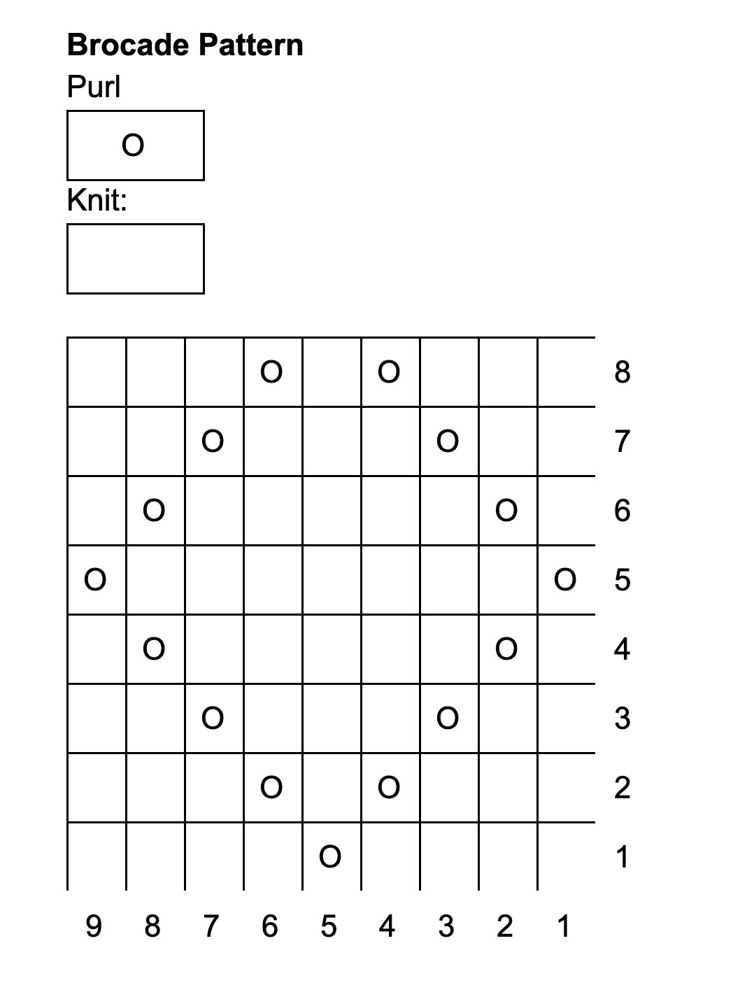

Instructions
Cast on (46, 54, 64, 72, 82) stitches split across 3 or 4 needles placing a marker when you join the round
Rows 1-12 K1, P1 across
Row 13 K (46, 54, 64, 72, 82)
Row 14 for sizes XS, M, and XL: K to the last two stitches then K2TOG
for sizes S and L: K across (45, 54, 63, 72, 81 sts)
Rows 16-102 work each row of the brocade pattern repeating the full pattern 11 times (or to desired length
Row 103 (or after you've finished to the desired length) Work row 1 of brocade pattern
Row 104 for sizes XS, M, and XL: K to the end and 1K increase
for sizes S and L: K across (46, 54, 64, 72, 82)
Row 105 K across
Rows 106-118 K1, P1 across
Cast off with a stretchy bind off.
Abbreviations
SC - single crochet
St/Sts - stitch/stitches
Inc - 2 sc in stitch
Dec - single crochet invisible decrease
Sl st - slip stitch
CC - invisible color change
Jupiter
Row 1 6sc in Brown in magic ring
Row 2 inc in each st around (12 sts)
Row 3 *1sc, inc* 6 times (18 sts)
Row 4 *2sc, inc* 6 times (24 sts)
Row 5 *3sc, inc* 6 times (30 sts) -- CC to Dark Brown at the end of row
Row 6 *4sc, inc* 6 times (36 sts)
Row 7 *5sc, inc* 6 times (42 sts)
Row 8 *6sc, inc* 6 times (48 sts) -- CC to Brown at the end of row
Row 9 *7sc, inc* 6 times (54 sts)
Row 10 *8sc, inc* 6 times (60 sts)
Row 11 *9sc, inc* 6 times (66 sts)
Row 12 *10sc, inc* 6 times (72 sts)
Row 13 *11sc, inc* 6 times (78 sts) -- CC to Cream at the end of row
Row 14 *12sc, inc* 6 times (84 sts)
Row 15 *13sc, inc* 6 times (90 sts)
Row 16 *14sc, inc* 6 times (96 sts)
Row 17 *15sc, inc* 6 times (102 sts)
Row 18 *16sc, inc* 6 times (108 sts) -- CC to Dark Brown at the end of row
Row 19 *17sc, inc* 6 times (114 sts)
Row 20 *18sc, inc* 6 times (120 sts) -- CC to Cream at the end of row
Row 21 - Row 25 120sc -- CC to Dark Brown at the end of Row 25
Row 26 - Row 30 120sc -- CC to Cream at the end of the Row 30
Row 31 - Row 35 120sc -- Attach safety eyes between Rows 30 and 31 and embroider mouth, CC to Brown at the end of Row 35
Row 36 - Row 38 120sc -- CC to Cream at the end of Row 38
Row 39 - Row 41 120sc -- CC to Brown at the end of Row 41
Row 42 *18sc, dec* 6 times (114 sts)
Row 43 *17sc, dec* 6 times (108 sts)
Row 44 *16sc, dec* 6 times (102 sts) -- CC to Cream at the end of Row 44
Row 45 *15sc, dec* 6 times (96 sts)
Row 46 *14sc, dec* 6 times (90 sts)
Row 47 *13sc, dec* 6 times (84 sts)
Row 48 *12sc, dec* 6 times (78 sts)
Row 49 *11sc, dec* 6 times (72 sts)
Row 50 *10sc, dec* 6 times (66 sts)
Row 51 *9sc, dec* 6 times (60 sts)
Row 52 *8sc, dec* 6 times (54 sts) -- CC to Dark Brown at the end of Row 52
Row 53 *7sc, dec* 6 times (48 sts)
Row 54 *6sc, dec* 6 times (42 sts)
Row 55 *5sc, dec* 6 times (36 sts) -- CC to Brown at the end of Row 55
Row 56 *4sc, dec* 6 times (30 sts)
Row 57 *3sc, dec* 6 times (24 sts)
Row 58 *2sc, dec* 6 times (18 sts) -- stuff with fiber fill
Row 59 *1sc, dec* 6 times (12 sts)
Row 60 *dec* 6 times (6 sts)
Fasten off. Weaving yarn with a needle through the front loop of the remaining 6 sts. Pull yarn back through the planet to tighten and close.
Red Spot
Chain 7 sts
Row 1 Sc into second chain and 4sc. 2sc in the last chain and rotate piece to work chains from the bottom.
Sc each chain. 2sc in the last chain and sl st to first stitch of previous row. Place stitch marker and work in rounds (14 sts)
Row 2 *6sc, inc* 2 times (16 sts)
Row 3 *7sc, inc* 2 times (18 sts)
Row 4 *8sc, inc* 2 times (20 sts)
Fasten off leaving a tail for sewing to the side of Jupiter.Abbreviations
SC - single crochet
St/Sts - stitch/stitches
Inc - 2 sc in stitch
Dec - single crochet invisible decrease
Sl st - slip stitch
CC - invisible color change
BLO - sc into back loops only
Feet/Body
Row 1 4sc in Pink in magic ring
Row 2 *inc* 4 times (8 sts)
Row 3 - Row 5 8 BLO (8 sts)
Fasten off
Row 1 4sc in Pink in magic ringRow 2 *inc* 4 times (8 sts)
Row 3 - Row 4 8sc BLO (8 sts)
Row 5 8sc, Ch 1, connect chain to the first foot with a slip stitch. Mark stitch.
Row 6 Sc around first foot, sc in BLO of chain stitch, sc around second foot, sc in FLO of chain stitch (18 sts)
Row 7 - Row 11 18sc
Stuff body and feet with fiber fill
Row 12 *1sc, dec* 6 times (12 sts)
Fasten off leaving a long tail for sewing
Arms - make two
Row 1 4sc in White in magic ring
Row 2 inc, 3sc (5 sts)
Row 3 inc, 4sc (6 sts) -- CC to Pink at the end of row
Row 4 inc, 5sc (7 sts)
Row 5 - Row 7 7sc
Row 8 1sc, dec, 1sc, dec, 1sc (5 sts)
Row 9 1sc, dec, dec (3 sts)
Fasten off
Head
Row 1 6sc in Pink in magic ring
Row 2 *inc* 6 times (12 sts)
Row 3 *1sc, inc* 6 times (18 sts)
Row 4 *2sc, inc* 6 times (24 sts)
Row 5 *3sc, inc* 6 times (30 sts)
Row 6 *4sc, inc* 6 times (36 sts)
Row 7 - Row 10 36sc
Row 11 *4sc, dec* 6 times (30 sts)
Row 12 *3sc, dec* 6 times (24 sts)
Row 13 *2sc, dec* 6 times (18 sts)
Attach safety eyes, embroider eyebrows, nose, and mouth, and stuff with fiber fill
Row 14 *1sc, dec* 6 times (12 sts)
Row 15 *dec* 6 times (6 sts)
Fasten off
Ears - make two
Row 1 6sc in Pink in magic ring
Row 2 *inc* 6 times (12 sts)
Row 3 - Row 9 3sc in White, switch to pink 9sc (12 sts)
Row 10 *1sc, dec* 4 times (8 sts)
Fasten off leaving a long tail for sewing
Attach ears to the top of the head, for the bent ear pull the yarn through the top of the ear and fold over and sew into head
Attach head to body
Attach arms to side of body